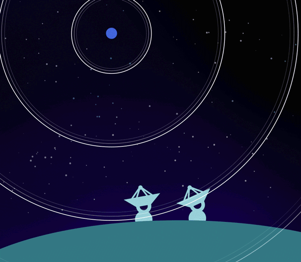
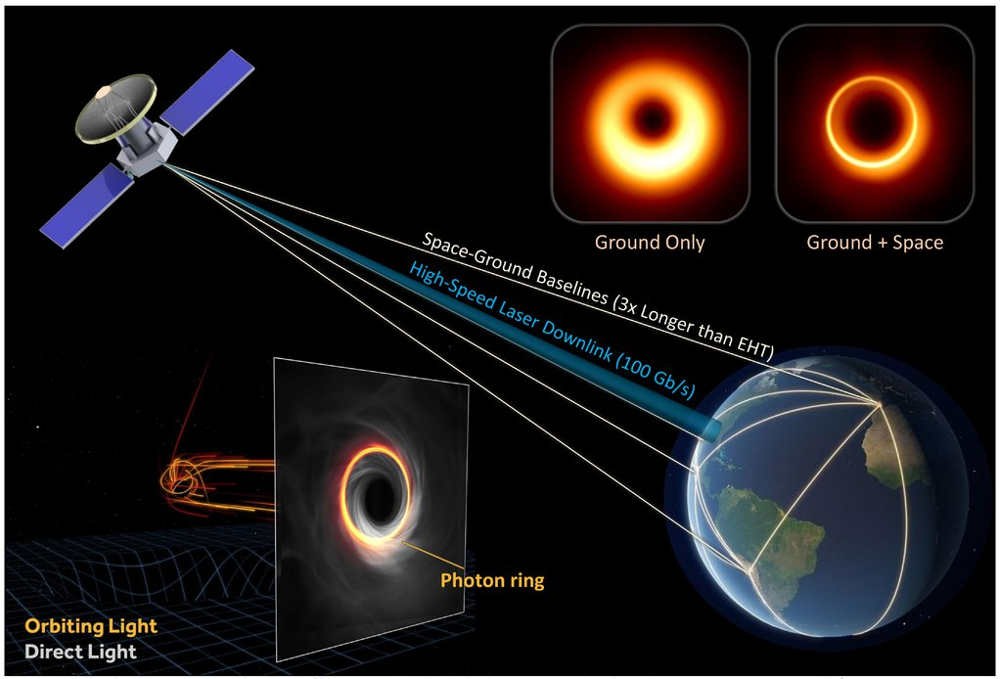

Radio interferometry arrays such as the Very Large Array (VLA), Atacama Large Millimeter/submillimeter Array (ALMA), and Event Horizon Telescope (EHT) are made up of a number of antennas that are distributed over large distances, but used collectively as a single, synthetic aperture. The arrays use principles in interferometry to achieve angular resolution much higher than each individual antenna would be able to achieve separately. By correlating signals from every pair of antennas, they construct high-resolution images of the radio sky, which reveal structure on scales from galactic jets to black hole shadows. This project provides an interactive visualization tool aimed at helping both scientists and educators explore how different array configurations affect imaging quality.
Visualization in radio astronomy is not just crucial to interpreting outcomes, but also central to decision-making for array planning and instruction—linking complicated Fourier-based theory of imaging and spatial instinct. This software employs exploration and interactivity to enhance comprehension of interferometry's ability and limitation, notably in imaging from partial data with algorithms such as CLEAN.
Background & Motivation
The EHT telescope project is expensive, with the entire project costing $60 million dollars. Adding more and more telescopes will require more and more money. Depending on the region at which the telescop is placed relative to all the other telescopes, the image generated will be different.
There are also geopolitical tensions that can affect the placement of telescopes. Some regions may prohibit the placement of telescopes, adding even more constraints to the placement of telescopes.
The motivation of this project is to simulate the image generated by telescope arrays, preventing the need to build telescopes to see resolution improvement.
Introduction
2.1 Radio Interferometry: Principles and Operation
Interferometry is where you superimpose multiple wave signals to get spatial information about a distant source. The double-slit experiment is a metaphor: light through two slits produces an interference pattern due to constructive and destructive interference between waves. Fringe spacing depends on slit separation and wavelength.
For radio interferometry, the slits are replaced with radio antennas. Two antennas a distance apart (a baseline) catch the same wave at nearly the same time, but not exactly, and they produce a phase difference. This time delay, τ (tau), is used to calculate the source’s position on the sky. The bigger the baseline, the better the resolution of the image. One of the main differences from the double-slit experiment is that radio interferometry does the opposite: instead of deconstructing patterns to infer structure, we observe several interference patterns (visibilities) and use those to construct an image of the sky.

Radio interferometry combines signals from multiple antennas to achieve higher resolution. Image credit: Max Planck Institute for Gravitational Physics.
Notable interferometer arrays include the Very Large Array (VLA) in New Mexico with 27 antennas, the Atacama Large Millimeter/submillimeter Array (ALMA) in Chile with 66 antennas, and the Event Horizon Telescope (EHT) - a global network that captured the first image of a black hole. Interestingly, ALMA itself is an interferometer that also serves as a single element within the larger EHT array, demonstrating the hierarchical nature of modern radio astronomy.
2.2 Arrays and Baselines
A radio interferometric array is a network of antennas arranged over some geometry. Famous examples include:
VLA – A Y-shaped array in New Mexico
ALMA – A high-altitude array in Chile
EHT – A global array spanning continents
Some instruments, such as ALMA, are interferometers on their own, but also function as sub-arrays within larger systems like the EHT.
2.3 Image Reconstruction and the CLEAN Algorithm
Converting interferometer data into a recognizable image is a big challenge. When antennas sample the visibility function, they do so incompletely - some spatial frequencies are not sampled due to the finite number of antennas and their physical arrangement. This incomplete sampling results in artifacts in the reconstructed image, often called the "dirty image."
Astronomers use sophisticated reconstruction algorithms to address this problem, with CLEAN being one of the most popular. Developed by Jan Högbom in 1974, CLEAN works on the principle that most astronomical images can be represented as a collection of point sources. The algorithm iterates:
Transforming interferometer data into recognizable images presents a significant challenge. When antennas sample the visibility function, they do so incompletely - certain spatial frequencies remain unsampled due to the finite number of antennas and their physical arrangement. This incomplete sampling results in artifacts in the reconstructed image, often called the "dirty image."
Find the brightest point in the dirty image
Subtract a fraction of that brightness (controlled by the "loop gain" parameter)
Record the position and brightness of that point
Repeat until a specified threshold is reached
The final "CLEAN image" is constructed by convolving the recorded points with an idealized beam pattern and adding back residual noise. Our tool allows you to adjust CLEAN parameters and see the effect immediately.
Visualization of the EHT. Image credit: EHT Collaboration
2.4 Future of Interferometry: Space-Based Elements
The next technological evolution in radio interferometry is to take arrays out into space. Concepts like the projected Black Hole Explorer would locate radio telescopes in low Earth orbit, augmented by ground stations to provide unprecedented baselines and resolution.
Space-based interferometry possesses certain major advantages, including baselines that are larger than Earth's diameter and observation of frequency bands masked by Earth's atmosphere. Our program specifically includes the capability of simulating satellite-based telescopes such that one can analyze the influence of orbital parameters on image quality.
The next frontier in radio interferometry involves extending arrays into space. Concepts like the proposed Black Hole Explorer would place radio telescopes in low Earth orbit, working in concert with ground-based facilities to achieve unprecedented baselines and resolution.

Concept illustration of a space-based interferometer working with ground stations. Image credit: Black Hole Explorer.
Our Tool
Our tool allows users to simulate the image produced by an interferometry array.
There are numerous inputs to the tool. The model image can be changed by uploading any image (such as a blackhole simulation image or a collection of various point sources). Array parameters (such as wavelength and duration) can be changed. Telescope locations can be moved, deleted or added (including the addition of satellites). Satellite parameters can be changed (such as eccentricity and arc perigee). Source direction can be changed as well. Additionally, as the image will be put through the CLEAN algorithm, the parameters of the CLEAN algorithm can be updated as well (such as the loop gain or the threshold).
In terms of outputs, the beam pattern, the fourier transform of the model image, the UV coverage and the dirty image generated by the pattern can be viewed. The dirty image will be put through the CLEAN algorithm and the ehtim algorithm. The outputs can be viewed as well.